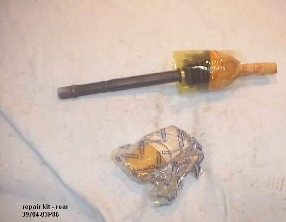
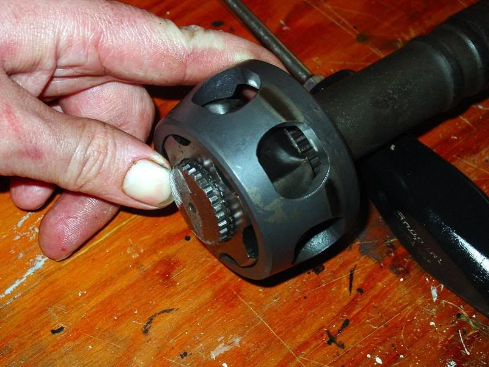

-
Finally! Here is the write-up for equipping your Z31 with a Viscous Limited Slip Differential using hybrid halfshafts. This write-up describes five ways for the budget-minded DIYââ¬â¢er to build hybrid halfshafts to fit the Z31. The write-up consists of two basic parts. One part gives information on swapping the VLSD carrier into the R200 Long-Nose differential housing. The other part gives information on assembling the hybrid halfshafts needed to complete the installation. I recommend reading the entire write-up before even thinking about starting this swap.
PART I
Assembling the differential
Since most R200V differentials are short nosed (unless you have the 88SS R200V) you will need to swap it's internals into your Z31 long-nose housing.
The process of swapping the VLSD carrier into the Z31 housing is simple and has been outlined before. Bemisââ¬â¢ webpage has some excellent information on this swap:
http://www.zrelated.com/VLSD.htm
Follow your FSM for removal and installation procedures. The swap consists of installing your Z31 ring gear onto the VLSD carrier and then installing the VLSD carrier into your differential housing. Be sure to get the differential shimmed correctly. Getting it wrong means differential noise and excessive wear. If you donââ¬â¢t know what your doing, take the differential to a qualified driveline shop. I decided to disassemble everything and clean before reassembly. New gaskets and seals were installed where necessary. Here are a few pictures of the process:
Shimming The Viscous Unit
I decided to shim my VLSD while I had it apart. I installed one extra standard (.80mm) size shim. More info on how that turned out at the end of this write-up. This isnââ¬â¢t really anything new, so Iââ¬â¢ll just post the link describing how to do it:
http://d1nz.org.nz/forum/viewtopic.php?t=9610
And here is a list of the available shim sizes. Each costs $5.72.
38424-40F60 =0.80mm (Stock Shim)
38424-40F67 =1.01mm
38424-40F75 =1.25mm
38424-40F83 =1.49mm
PART II
Assembling Hybrid Halfshafts
Lets start with some basic information.
Z31 NA cars came with Tripod-Tripod halfshafts and 6 bolt axle stub companion flanges and an open differential with either a 3.7:1 ratio (84-87) or a 3.9:1 ratio (88-89) .
Z31 Turbo cars came equipped with Birfield-Double Offset (BDO) halfshafts and 4 bolt axle stub companion flanges and either an open differential (84-86) with a 3.54:1 ratio, Clutch type LSD with 3.7:1 ratio (87-89) or a Viscous type LSD with a 3.7:1 ratio (88SS edition)
92 to Early 94 J30ââ¬â¢s came with Birfield-Double Offset (BDO) halfshafts and 5 bolt flanges and had a Viscous type LSD with a 3.916 ratio
Late 94 to 96 J30ââ¬â¢s came with Tripod-Tripod halfshafts and 6 bolt flanges and had a Viscous type LSD with a 3.916 ratio.
The R200V (VLSD) can also be found in NA Z32ââ¬â¢s, 97-01 Q45ââ¬â¢s, and some 240Sxââ¬â¢s. I currently donââ¬â¢t know what halfshafts or ratios are used in those applications. This can be easily found by referring to the FSM of the vehicle in question.
There are several ways to go about making your own hybrid VLSD halfshafts. Due to time and cost constraints, I could only attempt one way. Lucky for you, fellow Z31performance members 88SinZ and Bemis gave information on their methods. A big thank you goes out to 88SinZ for Method 1, and to Bemis for Methods 2-4.
Method 1
The first way is to combine the Z31 NA halfshafts and the L94-96 J30 halfshafts. The diff side CV is removed from the J30 halfshaft, and installed onto the diff side of the Z31 halfshaft. Both Bemis and 88SinZ have completed this method. While 88SinZ has succesfully installed these into his 88NA rear end, He suggests using 84-86 companion flanges (10mm shorter) for a bit of additional room.
J30 tripod shaft diassembly
1. remove retaining covers -save cap and spring(s)
2. remove C-clip from pass. side of J30 shaft -the right tool really helps
3. remove spider assembly -wrap a hammer in a towel or use a rubber mallet
4. remove diff side boots and housing sub assembly's
Z31 tripod shafts*
1. snip + remove diff side CV boot
2. slide the sub assembly away from the spider assembly
3. remove C clip from diff side of shaft
4. remove spider assembly
The Tripod Hybrid - reassembly
1. slide J30's diff side sub assembly onto the Z31 shaft
2. reconnect boot, reclamp
3. re-install spider assembly
4. re-install C clip
5. pack with grease
6. re-install cap+spring
7. enjoy your LSD
Method 2
The second way to make hybrid axles is to use the 1988 SS VLSD axle rebuild kits offered from Nissan. There are two rebuild axles, one for each side. They are NLA from Nissan, but that doesn't mean that they are not sitting in some warehouse collecting dust. These hybrid axles are made by using Z31 turbo BDO axles. All you need to do is remove the existing outer CV joint on the original axle and fit it onto the 1988 SS rebuild axles. Now you have VLSD axles.

Method 3
The third way to make hybrid VLSD axles for the Z31 it to purchase the original VLSD axle having the longer spline design and then have an original Z31 turbo axle machined to match the shorter spline design. It has to be done this way because you can always take away metal, but you canââ¬â¢t add it.
The original SS axles are no longer available (NLA) from Nissan, so good hunting.
jpg" alt="" />
Method 4
The fourth way to make hybrid VLSD axles, this being the most determined and bold method, is to once again use Z31 and J30 axles. Let's say I have an originally NA Z31, meaning that it has T-T axles and the complimentary 3x2 bolt hub companion flanges. I then get a J30 VLSD with BDO axles. Technically, to make a working VLSD and halfshafts out of this I will need Z31 turbo halfshafts and the 4 bolt hub companion flanges, as mentioned above. But, I can't find any 4 bolt hub companion flanges locally and I really don't want to mess around with swapping them out. So, I decide to marry the two axles together. I took the Z31 NA halfshaft, removed the inner CV joint, and joined the inner J30 CV joint on the axle. This was accomplished by welding the inner race onto the shaft. I decided to bring the inner race about 1.5 inches closer to the center of the shaft in order to make up the difference of length added by the J30 input shaft. Now I have a VLSD hybrid axle that will bolt up to the Z31 NA hub companion flange and connect to the 5 bolt input shaft of the J30 VLSD.


Method 5
The fifth way is to combine the Z31 Turbo halfshafts (BDO type) and the 92-E94 J30 halfshafts (BDO type). Once again, the diff side CV is removed from the J30 halfshaft, and installed onto the diff side of the Z31 halfshaft. This is the method that I chose for my hybrid halfshaft assembly. My VLSD was pulled from a 93 J30. BUT I have a 87NA2T…This meant I would need Z31 Turbo halfshafts and 4-bolt axle stub companion flanges to install the hybrid halfshafts into my 87NA rear end. Note that it would have been much easier to use the L94-96 J30 halfshafts and follow method 1. Instead, I made do with what I could get my hands on.
Lets start with a look at the types of retaining rings you will run into if you go the BDO route.
On the left is what I refer to as a stop ring. These retain the inner race from sliding inward on the halfshaft. They are best removed using a stop ring pliers. Also, note that these are the only ring not available from the dealership (unless you buy an entire halfshaft). The big ring in the middle retains the slide joint housing. The small middle ring is what I refer to as a compression ring. These rings retain the stock Z31 turbo inner CV from sliding off of the halfshaft. The ring on the right is referred to as a snap ring. They retain the Z31 turbo outer CV from sliding off of the halfshaft, and also retain the J30 inner CV from sliding off of the halfshaft. They are best removed using a snap ring pliers.
src="http://i130.photobucket.com/albums/p280/Mike_Gruizinga/Z-Car/Rear%20End/MikesPhotos113.jpg" alt="" />
Disassemble the diff side CV of the Z31 Halfshaft. BDO halfshafts are simple. First remove the CV boot and clean all the nasty brown grease off. The diff side CV is held on by a compression style ring. Knock the CV solidly on its inner race with a big hammer. This forces the ring to compress, allowing the CV to slide over it and right off the shaftââ¬â¢s splines.
(Insert Pic)
While I had it apart, I decided to remove the wheel side CV of the Z31 halfshaft as well for cleaning and greasing. In the end, I would have had to remove it anyways, because the cage needed to be turned around to shorten the overall length of the halfshaft. This is explained later in the write-up.
Disassemble the diff side of the J30 Halfshaft. Remove the CV Boot and clean up the nasty green grease. Remove the big snap ring from the slide joint housing with a screwdriver. Slide the slide joint housing off of the cage/ball/race assembly. Look at the end of the halfshaft. Using a snap ring pliers, remove the snap ring from the splined shaft and slide the cage/ball/race assembly off. It looks like this, except with green grease instead of brown.
Next remove that big nasty stop ring you saw in the last picture. It helps if you have the correct pair of pliers. Just donââ¬â¢t do this:
What comes next seems obvious. Simply slide the J30 diff side cage/ball/race assembly onto the diff side of the Z31 halfshaft and reassemble everything. BUT WAIT! There's a surprise waiting for you. With the j30 assembly slid on, the outer snap ring groove is not visible!
Before you can reassemble, modifications need to be made to the diff end of your Z31 halfshaft. The way I solved this problem was to mill new snap ring grooves into my Z31 halfshaft. Anyone with a 3 jaw lathe can make this happen. My neighbor happens to work at a machine shop, and did this for free. As you can see, the inner groove was extended, and the outer groove is a brand new groove sized to some snap rings I had. Stock is on the top (with stop ring installed) and milled is on the bottom:

Once the machining is done you are ready for assembly. Install the J30 boot, stop ring, cage, inner race, and snap ring onto your newly milled shaft (diff side).
PLEASE NOTE! The cage as shown above, while installed in the factory position, resulted in a halfshaft which was too long. For my application the cage needed to be turned around, resulting in a shorter length. This had to be done on both sides of the halfshaft. Also, on the slide joint housings, you made need to tap out the cap a little bit. You may even need to grind a bit off of the end of the halfshaft. Here are pictures of the cage turned around, in the position I needed. The one on the top isnââ¬â¢t my picture…

0.photobucket.com/albums/p280/Mike_Gruizinga/Z-Car/Rear%20End/MikesPhotos145.jpg" alt="" />
The next step is to pack the slide joint housing with grease. The Z31 housing, shown on the right, requires between 4 and 6 ounces of grease. The J30 housing, shown on the left, requires between 6 and 8 ounces of grease. A standard dixie cup holds 5 ounces. This was a handy way to measure out how much grease to use. I used Valvoline Synthetic grease for CV axles. Itââ¬â¢s best to test fit your axles before filling everything with grease. I learned that the hard way.
Assemble both the CV joints onto the halfshaft. Once again, note that these pictures were taken with the cage in the OEM position.

Picture next to OEM Z31T
The next step is to install the halfshafts into the rear subframe assembly. This took a few tries for me as I figured out what worked and what didnââ¬â¢t. Besides the issue of turning the cages around, I also realized this:
As you can see, 87-89 companion flanges are 10mm longer than 84-86 companion flanges. I used the 84-86 companion flanges for my setup, and this provided the needed room for the hybrid halfshafts. Even with the extra 10mm of room, the shafts were a tight fit.
Results
After a few weeks of testing this setup, I have decided that I am very happy with the results. Having a limited slip differential makes the car a whole different machine. Itââ¬â¢s much more predictable in hard cornering situations, and hooks up much better under hard acceleration. I did, however, have a few problems with my new setup:
First of all, the differential is a bit loud. Between 45 and 55 MPH a howling sound resonates through the cabin. I attribute this to my backlash setting between the pinion and ring gears. I used the shims I had and set the backlash to .009ââ¬Â. The FSM says backlash should be .005ââ¬Â to .007ââ¬Â. The differential noise can also be attributed to my new polyurethane cross member bushings and differential mount. I am using Redline Shockproof Heavy Weight diff oil. I should note that after some break in time, the differential has quieted down a bit.
The only other problem that I experienced was a result of shimming the Viscous unit. As mentioned earlier, I opted to install an extra standard sized (.80mm) shim. At first the diff was very tight. I would get wheel hop and clunking around sharp corners. However, after several runs down the drag strip, and a bit more abuse, the differential loosened up some. It no longer hops or clunks around corners, and it still is very quick to lock up. Itââ¬â¢s actually very predictableââ¬Â¦
Overall I am very happy with the results of this swap. I believe these methods to be among the cheapest and best methods for attaining LSD capabilities in a Z31. By using Junkyard parts, I was able to perform this swap for less that $125. Of course I ended up spending quite a bit more than that while having the rear end disassembled. I decided to upgrade my suspension with ST springs and Tokico blues, and MSA full polyurethane kit, Cross member bushings, and a Z31parts poly diff mount. I also had my cross member modified for camber adjustment via 1artworkZââ¬â¢s write-up. Sadly, the mod did not allow for enough camber adjustment. Iââ¬â¢m still working on a solution for that problem…
Notes
Parts List (for my application)
1993 J30 Differential
1993 J30 Halfshafts
1984 300ZX Turbo halfshafts
1984 300ZX Turbo Companion flanges
CV boots (Z31 and J30)
CV clamps
Valvoline Synthetic CV grease
VLSD Shim #38424-40F60 (.80mm)
1987 300ZX Differential seals (all seals/gaskets)
ââ¬ÅSpecialtyââ¬Â Tools I used
Big 3/4ââ¬Â impact + Air
Slide hammer/axle stub puller
Stop ring pliers
Dial Indicator
Verneer Calipers
Addendums:
A) If the hybrid axles are made using methods 1,4, or 5, it will become apparent that they are a bit longer than the orginal Z31 axles and are a very tight fit when being installed. This is due to the additional length given by the inner CV joints and VLSD input shafts. There are a couple ways to help fix this problem. The first two options are good, but I highly suggest the third option if you want the job done right.
1) If you are using T-T axles, cut down the positioning springs at the ends of the joints.
2) If you are using BDO axles, turn the outer races of the CV joint around.
3) Using either CV joint, bring the inner race (BDO) or spider assembly (T-T) about 1.5 inches closer to the center of the shaft and weld it into place, making 100% sure that the moved item is centered on the shaft. It is a good idea to chamfer the welding areas in order to get deep, strong, and clean welds. Cut the remaining shaft material from the end. This will require delicate grinding and welding, but it can be done correctly and effectively. I did mine with an angle grinder and a MIG welder.
-bemis
B) Here are some diagram's pulled from the Nissan Factory Service Manual to be used as a reference and terminology guide in order to set a standard that is clearly understood.
-bemis
C) Using the Z32 VLSD
It appears that the Z32 VLSD unit is designed slightly different than the Infinity J30. First of all, the input shafts are slightly different lengths and have more spline contact. Secondly, the 8mm shim is set on opposites side of the carrier in order to make up for the differences in lengths. This causes the shorter input shaft to not seat all the way in the carrier. In order to make this swap possible, one needs to shorten the shortest input stub and regroove for the c-ring. More information can be found in this thread:
viewtopic.php?f=3&t=7937"produce first.talk second." -
I think that the Q45 uses larger diameter axle shafts. Not too sure if they are the same spline count as the Z31s. Try it out, let everyone know.nismogab wrote: wow great write -up
let say i have some z32 n/a half shaft laying in my garage , and a q45 lsd differential , and on my 86 z31 I have the BDO halfshaft type(turbo) , all I need is some 5 hole input shaft for the diff , will they fit in the q45 unit?So will i be using method 5? Shiro Special # 981 Being assembled in my spare time Chromoly acquired!
Shiro Special # 981 Being assembled in my spare time Chromoly acquired!
Originally posted by BoostedMamma -
You will at the very least need the VLSD input shafts of the Q45 VLSD. Any other R200 VLSD input shaft, put into a Q45 carrier, will just spin in the hole. From there, as long as the bolt patterns of the Q45 VLSD input shafts match up to the 5-bolt star pattern of the Z32NA or J30 axles, you can make hybrid halfshafts to fit you 86T.nismogab wrote: wow great write -up
let say i have some z32 n/a half shaft laying in my garage , and a q45 lsd differential , and on my 86 z31 I have the BDO halfshaft type(turbo) , all I need is some 5 hole input shaft for the diff , will they fit in the q45 unit?So will i be using method 5?
I would like to see someone make hybrid axles using a set of Q45 axles and Z31 axles.1984 300ZXT
1986 300ZX 2x2 NA2T
2000 Porsche Boxster
2007 Toyota Yaris -
ok so I bought a z32 diff , and i am planing to do this swap , but could I please now what should be the length of the halfshaft after I hybrid them out , I am going to use the method # 5 on my car. Note my lsd diff is has some input shaft with the abs cogs , Will it be a problem?thanks
Also do you think I should install the shim (0.80mm) the diff as only 37 000 mile of abuse. The diff feels alot tighter that my 150 000 mile 240sx lsd diff , when i turn it by hand?1986 GLL VQ35DE(287hp) / Z33 6S tranny, done!
Black 240sx 1997 (ka24de)5S daily driver. -
can you give us pictures?nismogab wrote: ok so I bought a z32 diff , and i am planing to do this swap , but could I please now what should be the length of the halfshaft after I hybrid them out , I am going to use the method # 5 on my car. Note my lsd diff is has some input shaft with the abs cogs , Will it be a problem?thanks
Also do you think I should install the shim (0.80mm) the diff as only 37 000 mile of abuse. The diff feels alot tighter that my 150 000 mile 240sx lsd diff , when i turn it by hand?
I have a Z32 diff. From looking at the input shafts, it doesn't appear that the extra cog for ABS isn't going to cause any problems.
As far as the getting the final length of the hybrid axles right, measure the length of the Z31 turbo axles, from end to end, with the joints fully extended and compressed. Put together the hybrid axles and once again measure the length of the axles extended and compressed. Determined the difference in length, post it up on this thread, and then make up the difference in length as mentioned in the "Afterwords".1984 300ZXT
1986 300ZX 2x2 NA2T
2000 Porsche Boxster
2007 Toyota Yaris -
I am currently in the process of doing this hybrid halfshaft(method 5 ) , but I have some questions about it , first of all is the fact that my 300zx as the earlier , rear trailing harms , will the hybrid halfshaft fit , because Mike_GruiZinga as a 87 Z , and seem to say that the compagnon flange are longer on the 87-89 , and in is case he installed the 84-86 companion flange , so in my case , i am F%$K because I already have the shorter companion flange on the already shorter trailing arms. So I have to find a way to get the halfshaft atleast 10 mm shorter than the one of Mike_GruiZinga.
So the first thing I got in mind is at the place of doing a other groove for the snap ring for the diff side cage/ball/race assembly , I tough that i could get a little more space by moving the stop ring lower. see picture

bemis I will post the pictures of the input shaft from my z32 diff with abs .
Thank for the help.1986 GLL VQ35DE(287hp) / Z33 6S tranny, done!
Black 240sx 1997 (ka24de)5S daily driver. -
As far as shorter and longer companion flanges, if 10mm determines whether your hybrid axles go into position, then you have to step back and rethink the situation. With that tight of a fit, the joints will rub and bind. That's why I suggest to refer to the "Afterwords" section in order to get the appropriate lengths.nismogab wrote: I am currently in the process of doing this hybrid halfshaft(method 5 ) , but I have some questions about it , first of all is the fact that my 300zx as the earlier , rear trailing harms , will the hybrid halfshaft fit , because Mike_GruiZinga as a 87 Z , and seem to say that the compagnon flange are longer on the 87-89 , and in is case he installed the 84-86 companion flange , so in my case , i am F%$K because I already have the shorter companion flange on the already shorter trailing arms. So I have to find a way to get the halfshaft atleast 10 mm shorter than the one of Mike_GruiZinga.
So the first thing I got in mind is at the place of doing a other groove for the snap ring for the diff side cage/ball/race assembly , I tough that i could get a little more space by moving the stop ring lower. see picture
Yes, you can cut the inner groove for the snap ring further down, but it won't shorten the axle length at all.1984 300ZXT
1986 300ZX 2x2 NA2T
2000 Porsche Boxster
2007 Toyota Yaris -
[quote]bemis wrote:By moving both snap ring groove further down you will move the position of the inner race on the shaft, and grinding off the end of the axle, you will shorten the overall length. But you dont have much room to move the inner race, because the splined area just isnt that big. I guess what I'm trying to say is, the difference in length wont be enough.Originally posted by nismogab
And as for my CV joints being too tight, or binding up, I havn't experienced any of that yet…"produce first.talk second." -
this.... is there any combination that would make them too short? -
Yeah, if you overshoot your measurements and bring one of the inner joints in too close to center. Then the rubber boots will be stretched out causing them to split and fail, and the bearings or rollers will strike the ring stoppers. Otherwise, there's no way to make these axles too short.1984 300ZXT
1986 300ZX 2x2 NA2T
2000 Porsche Boxster
2007 Toyota Yaris -
Good. We've noticed some type of grinding noise in turns with a set of T-T hybrid axles during sprited turns. Don't know for sure what exactly it is. The positioning springs are cut down. My guess is that the control arm bushings are flexing just enough to push the shaft into the end of one of the joints once the shaft play has exceded it's limit. Or the VLSD is FUBAR. Or during the turn, the chasis is lifting so high off the ground on the inner side of the turn that the shafts are now striking the slide-joint housing, being that the shafts are already pushing the end of their throw.Mike_GruiZinga wrote: And as for my CV joints being too tight, or binding up, I havn't experienced any of that yet…1984 300ZXT
1986 300ZX 2x2 NA2T
2000 Porsche Boxster
2007 Toyota Yaris -
reason I ask about too short is it would be much easier to machine a spacer for the wheel side companion flange as needed, surely that would be better than bottoming out the tripod? -
Experienced my first problem with the swap this past weekend. A few of the bolts from the halfshaft-companion flange holes wiggled themselves loose. The remaining bolts broke. This let the outer end the shaft fall free from the companion flange. The next day I repaired using grade 8 bolts and lock-nuts. Guess i should have checked all the fasteners after test-driving…"produce first.talk second." -
okay , where you using some lock washers before it failed? Also is it normal that the bolts that hold the ring gear on the z31 r200 pumpkin are smaller in diameter (12mm) vs (13mm) for the z32 ring gear bolts?Mike_GruiZinga wrote: Experienced my first problem with the swap this past weekend. A few of the bolts from the halfshaft-companion flange holes wiggled themselves loose. The remaining bolts broke. This let the outer end the shaft fall free from the companion flange. The next day I repaired using grade 8 bolts and lock-nuts. Guess i should have checked all the fasteners after test-driving…
picture
bemis here are the input shaft of a z32 abs the longer one is 6 3/4 inch and the other is 5 3/4 inch , hope they are the same length as the normal ones.
one last question for now , when i swap the z32 pumpkin in the z31 diff casing , I need to use the side bearing shims , of the z31 case or z32 diff .1986 GLL VQ35DE(287hp) / Z33 6S tranny, done!
Black 240sx 1997 (ka24de)5S daily driver. -
Yes, it is normal. I just used the Z31 bolts to secure the ring gear to the housing and have been abusing VLSDs for years like this. Once the bolts are torqued down and lock-tighted, they are not going anywhere.nismogab wrote: Also is it normal that the bolts that hold the ring gear on the z31 r200 pumpkin are smaller in diameter (12mm) vs (13mm) for the z32 ring gear bolts?
bemis here are the input shaft of a z32 abs the longer one is 6 3/4 inch and the other is 5 3/4 inch , hope they are the same length as the normal ones.
one last question for now , when i swap the z32 pumpkin in the z31 diff casing , I need to use the side bearing shims , of the z31 case or z32 diff .
I will have to get back with you on this one.
There is no definate answer to this question. Just alternatly try both sets and see what brings it into specs according to the FSM. You may need to swap parts to make it work too.
When your checking the gear rub. You can color the teeth with a Sharpie (silver color works good) marker instead of finding that iron-oxide solution. Make sure that all the gear oil has been removed from the teeth on the pinion and ring gear. Using a socket that fits the pinion nut, and a drill adapter, spin the assembly with a power drill. By hand, it will take you a long time to get the desired rub marks.1984 300ZXT
1986 300ZX 2x2 NA2T
2000 Porsche Boxster
2007 Toyota Yaris

Copyright © 2006–. All rights reserved. Privacy Policy